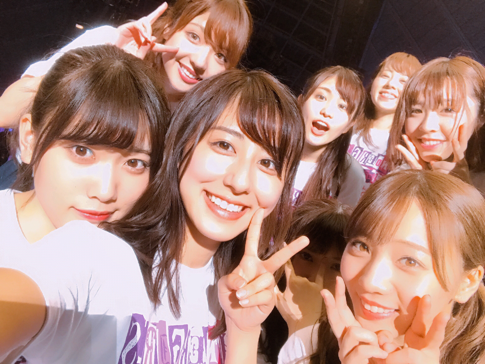
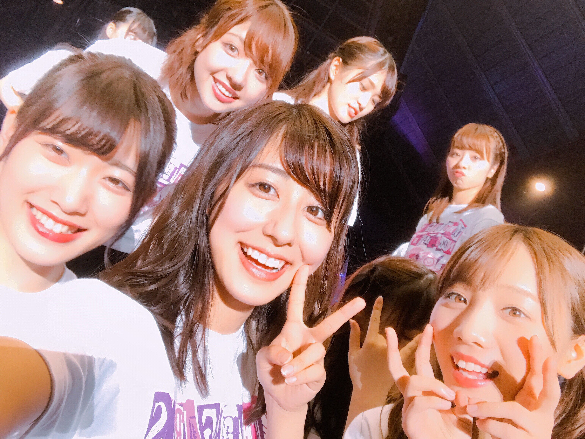

| 2017/04 21 Fri | 斎藤ちはる ２日目 |
ちはるーむへようこそ
今日のちはるーむではかりん有能について語り合いました。
今日は民放の日。
1951年の今日に日本で初めて民放の放送許可が下りた日から
150年の時を経て今にも繋がっていると
思うと素敵ですね☺︎
今日はアンダーライブ２日目！
来てくださった皆さん
応援してくださった皆さん
ありがとうございましたm(_ _)m
今日はトークコーナーの一つの
MCを務めさせていただいたのですが
カミカミになってしまって
ごめんなさいヽ(；；)丿
最初はゆっくり、焦らずにやろうと
心得ていたのですが
途中からテンパってしまって
あたふたしてしまいました...
聞き取りづらい箇所も
あったとは思いますが
皆さん温かく見守ってくださって
ありがとうございました！！
本当毎回毎回完璧なMCぶりを見せてくれる
かりんは本当に凄い！！
頭が上がりません...
MCがうまく出来なかったのが
悔しくて悔しくて仕方なかったので
MC後の私は相当力こもっていた気がする。
踊っていたら自然に悔し涙も溢れてきていたのは秘密。
もっともっと上手くなって
頼り甲斐のあるMC、トークが出来るように
改めて私も頑張らなきゃいけないと
心に強く思いました(> <)！！
見ていてください。


今日終わった後の私たち
みんないい顔だ〜☺︎☺︎
------------------------------------------------♡
♬ ChihaMusic
「あの日、僕は咄嗟に嘘をついた」乃木坂46
とても好きな曲。咄嗟。
雰囲気もテンポも
アンダー曲らしさも全部良いけど
1番は、歌詞が凄いいい。
今日の自分のMCの事を考えながら
"もしもやり直せるなら
どこまで巻き戻そうか"
ってところを歌っていたら
悔しさが余計込み上げて来た...
そんな後悔をしないように
日々準備をしておかないといけない。
昨日の外ハネ
今日の髪型はまた載せます◎
明日は３日目。
ついにラストの日。
自分たちはどこまで出来るのか
どこまで行けるのか
どこまで皆さんを連れていけるのか
12人の底地、見ていてください
おやすみ
斎藤ちはる